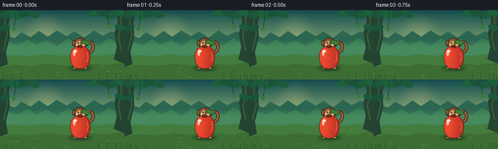
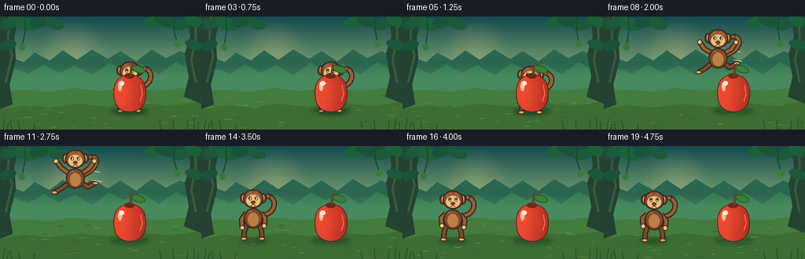

CODING AGENTS AS PIXEL WORLD MODELS
traex/GPT-5.6-Sol · dynamic_spatial_relationship_0053
点击播放 · 原生 RGB 像素
逐轮保存的候选
回放视频、检查图与代码变化。
每份候选均可单独播放。实际图片检查记录在下方工具轨迹中。
候选 01播放与检查图
点击播放 · 原生 RGB 像素


展开代码变化
--- 上一保存版本
+++ 本次保存版本
@@ -0,0 +1,331 @@
+from pathlib import Path
+import math
+import numpy as np
+from PIL import Image, ImageDraw, ImageFilter
+import artifact_io
+
+# PixelWorld contract: deterministic, text-only procedural animation.
+W, H, N = 256, 144, 20
+S = 4
+WS, HS = W * S, H * S
+rng = np.random.default_rng(5301)
+
+
+def q(v):
+ if isinstance(v, (tuple, list)):
+ return tuple(int(round(x * S)) for x in v)
+ return int(round(v * S))
+
+
+def ellipse(d, box, fill, outline=None, width=1):
+ d.ellipse(q(box), fill=fill, outline=outline, width=q(width) if outline else 1)
+
+
+def polygon(d, pts, fill, outline=None):
+ d.polygon([q(p) for p in pts], fill=fill)
+ if outline:
+ d.line([q(p) for p in pts + [pts[0]]], fill=outline, width=q(1), joint="curve")
+
+
+def line(d, pts, fill, width=1, joint="curve"):
+ d.line([q(p) for p in pts], fill=fill, width=q(width), joint=joint)
+
+
+def bezier(p0, p1, p2, p3, steps=22):
+ pts = []
+ for t in np.linspace(0, 1, steps):
+ u = 1 - t
+ pts.append((u**3*p0[0] + 3*u*u*t*p1[0] + 3*u*t*t*p2[0] + t**3*p3[0],
+ u**3*p0[1] + 3*u*u*t*p1[1] + 3*u*t*t*p2[1] + t**3*p3[1]))
+ return pts
+
+
+def background(frame_index):
+ # Layered dawn gradient, warm in the clearing and cool in the canopy.
+ y = np.arange(HS)[:, None]
+ top = np.array([19, 74, 78], dtype=float)
+ bottom = np.array([177, 209, 131], dtype=float)
+ t = np.minimum(1, y / (HS * .72))[..., None]
+ arr = top[None, None, :] * (1 - t) + bottom[None, None, :] * t
+ arr = np.repeat(arr, WS, axis=1)
+ im = Image.fromarray(np.uint8(arr), "RGB")
+ d = ImageDraw.Draw(im)
+
+ # Soft sun glow behind the action.
+ glow = Image.new("RGBA", (WS, HS), (0, 0, 0, 0))
+ gd = ImageDraw.Draw(glow)
+ for r in range(48, 4, -2):
+ alpha = int(1.4 * (49-r))
+ ellipse(gd, (93-r, 49-r, 93+r, 49+r), (255, 226, 146, min(60, alpha)))
+ glow = glow.filter(ImageFilter.GaussianBlur(q(8)))
+ im = Image.alpha_composite(im.convert("RGBA"), glow).convert("RGB")
+ d = ImageDraw.Draw(im)
+
+ # Distant jungle ridges.
+ polygon(d, [(0,62),(14,52),(30,58),(44,46),(63,56),(80,43),(98,55),(117,42),
+ (137,54),(153,44),(173,57),(193,42),(211,53),(229,44),(256,55),(256,103),(0,103)],
+ (43,103,81))
+ polygon(d, [(0,78),(18,66),(36,73),(56,61),(75,72),(95,62),(117,75),(139,59),
+ (158,69),(180,60),(202,74),(224,58),(242,68),(256,63),(256,108),(0,108)],
+ (52,125,83))
+ # Mist band.
+ mist = Image.new("RGBA", (WS, HS), (0,0,0,0))
+ md = ImageDraw.Draw(mist)
+ md.rectangle((0,q(63),WS,q(105)), fill=(195,223,168,34))
+ mist = mist.filter(ImageFilter.GaussianBlur(q(7)))
+ im = Image.alpha_composite(im.convert("RGBA"), mist).convert("RGB")
+ d = ImageDraw.Draw(im)
+
+ # Ground and gently curving far edge.
+ polygon(d, [(0,97),(28,93),(62,96),(92,91),(128,95),(162,90),(202,95),(232,91),(256,94),
+ (256,144),(0,144)], (67,124,61))
+ polygon(d, [(0,118),(31,113),(65,116),(99,111),(138,115),(173,109),(215,114),(256,108),
+ (256,144),(0,144)], (61,109,51))
+ # Forest-floor streaks and fixed texture.
+ for i in range(46):
+ x = int(rng.integers(0, 256)); yy = int(rng.integers(101, 143))
+ length = int(rng.integers(2, 10))
+ c = [(90,143,63),(49,91,47),(112,151,69),(75,118,49)][i % 4]
+ line(d, [(x,yy),(min(255,x+length),yy + (i%3-1)*.3)], c, 0.65)
+
+ # Trunks frame, rather than obscure, the two subjects.
+ polygon(d, [(0,0),(24,0),(18,26),(20,55),(12,87),(16,112),(0,118)], (35,66,50))
+ polygon(d, [(256,0),(239,0),(242,25),(235,47),(240,77),(234,102),(256,111)], (36,67,49))
+ line(d, [(12,0),(10,28),(15,50),(7,84)], (55,91,57), 3)
+ line(d, [(248,0),(249,28),(243,55),(249,84)], (57,91,55), 3)
+
+ # Canopy leaves with tiny periodic sway only at dangling tips.
+ sway = 1.2 * math.sin(frame_index * math.pi / 10)
+ leaf_specs = [
+ (4,9,13,7,-22),(18,6,14,7,18),(34,10,15,8,-12),(53,5,16,8,20),
+ (70,9,12,7,-18),(194,7,13,7,15),(212,5,16,8,-15),(231,10,14,7,18),(248,5,13,8,-20),
+ (9,37,12,6,18),(247,36,12,6,-18)]
+ for j,(cx,cy,rx,ry,ang) in enumerate(leaf_specs):
+ layer = Image.new("RGBA", (WS,HS), (0,0,0,0))
+ ld = ImageDraw.Draw(layer)
+ col = (27,82 + (j%3)*7,58,255)
+ ellipse(ld, (cx-rx,cy-ry,cx+rx,cy+ry), col)
+ layer = layer.rotate(ang, resample=Image.Resampling.BICUBIC, center=q((cx,cy)))
+ im = Image.alpha_composite(im.convert("RGBA"), layer).convert("RGB")
+ d = ImageDraw.Draw(im)
+ line(d, [(31,0),(32,18),(28+sway,37)], (28,73,47), 1.5)
+ ellipse(d, (24+sway,34,32+sway,43), (56,119,60))
+ line(d, [(222,0),(221,17),(225-sway,33)], (28,73,47), 1.5)
+ ellipse(d, (221-sway,30,229-sway,39), (58,122,61))
+
+ # A few foreground grass silhouettes.
+ for x in [4,9,15,25,43,205,221,238,247,252]:
+ h = 6 + (x*7)%10
+ line(d, [(x,144),(x-2+(x%5),144-h)], (35,78,42), 1)
+ return im
+
+
+def draw_shadow(im, cx, lift, is_apple=False):
+ layer = Image.new("RGBA", (WS,HS), (0,0,0,0))
+ d = ImageDraw.Draw(layer)
+ if is_apple:
+ ellipse(d, (cx-25,116,cx+25,125), (25,48,28,90))
+ else:
+ # Shadow shrinks and lightens at the apex.
+ f = max(.28, 1-lift/72)
+ ellipse(d, (cx-18*f,120-2*f,cx+18*f,120+4*f), (22,43,26,int(90*f+18)))
+ layer = layer.filter(ImageFilter.GaussianBlur(q(2.4)))
+ im.alpha_composite(layer)
+
+
+def draw_motion_lines(im, x, y, p):
+ if not (.08 < p < .9):
+ return
+ d = ImageDraw.Draw(im)
+ # Sparse warm lines behind the monkey emphasize a single leftward jump.
+ strength = math.sin(math.pi*p)
+ for k in range(3):
+ yy = y - 49 + k*12
+ length = (9 + k*3) * strength
+ line(d, [(x+20,yy),(x+20+length,yy+2)], (237,222,153,150), 1.0)
+
+
+def draw_monkey(im, x, foot_y, jump_p=None, crouch=0.0, squash=0.0):
+ d = ImageDraw.Draw(im)
+ outline = (58,38,29,255)
+ dark = (83,50,34,255)
+ fur = (125,75,43,255)
+ fur_hi = (154,96,54,255)
+ tan = (221,169,102,255)
+ tan2 = (238,192,123,255)
+
+ # Vertical compression during anticipation and landing.
+ sy = 1 - .10*crouch - .07*squash
+ def P(dx, dy):
+ return (x+dx, foot_y + dy*sy)
+
+ # Pose parameter controls limb spread through takeoff / flight.
+ if jump_p is None:
+ swing = .12 * math.sin(foot_y + x)
+ arm_raise = -2 + 2*swing
+ leg_spread = 2
+ tail_kick = 0
+ else:
+ s = math.sin(math.pi*jump_p)
+ arm_raise = -12*s + 2*(1-s)
+ leg_spread = 8*s + 2
+ tail_kick = 8*s
+
+ # Tail behind the body, with a bright rim along its inner curl.
+ p0=P(9,-31); p1=P(29,-31-tail_kick); p2=P(32,-52-tail_kick*.5); p3=P(19,-55+tail_kick*.1)
+ tailpts=bezier(p0,p1,p2,p3)
+ line(d, tailpts, outline, 7)
+ line(d, tailpts, fur_hi, 4)
+ ellipse(d, (p3[0]-3,p3[1]-3,p3[0]+3,p3[1]+3), fur_hi, outline, 1)
+
+ # Rear legs: strong readable silhouette in the airborne pose.
+ hipL=P(-7,-22); hipR=P(7,-22)
+ if jump_p is not None and .12 < jump_p < .88:
+ kneeL=P(-12-leg_spread*.6,-11-leg_spread*.35); footL=P(-17-leg_spread,-10+leg_spread*.1)
+ kneeR=P(11+leg_spread*.5,-13-leg_spread*.3); footR=P(16+leg_spread,-19-leg_spread*.2)
+ else:
+ kneeL=P(-11-leg_spread*.2,-10); footL=P(-11-leg_spread*.5,-1)
+ kneeR=P(10+leg_spread*.2,-10); footR=P(10+leg_spread*.5,-1)
+ for pts in [(hipL,kneeL,footL),(hipR,kneeR,footR)]:
+ line(d, pts, outline, 7)
+ line(d, pts, fur, 4)
+ ellipse(d, (pts[-1][0]-4,pts[-1][1]-2.3,pts[-1][0]+4,pts[-1][1]+2.3), tan, outline, 1)
+
+ # Arms drawn behind torso but hands remain visible.
+ shoulderL=P(-9,-34); shoulderR=P(9,-34)
+ if jump_p is not None and .08 < jump_p < .9:
+ handL=P(-18-leg_spread*.7,-44+arm_raise*.45)
+ elbowL=P(-15-leg_spread*.3,-35+arm_raise*.5)
+ handR=P(18+leg_spread*.65,-43+arm_raise*.55)
+ elbowR=P(15+leg_spread*.3,-35+arm_raise*.45)
+ else:
+ elbowL=P(-15,-27+arm_raise); handL=P(-14,-17+arm_raise)
+ elbowR=P(15,-27-arm_raise*.2); handR=P(14,-17-arm_raise*.2)
+ for pts in [(shoulderL,elbowL,handL),(shoulderR,elbowR,handR)]:
+ line(d, pts, outline, 7)
+ line(d, pts, fur_hi, 4)
+ ellipse(d, (pts[-1][0]-3.3,pts[-1][1]-3.3,pts[-1][0]+3.3,pts[-1][1]+3.3), tan2, outline, 1)
+
+ # Torso with belly patch.
+ ellipse(d, (*P(-12,-40), *P(12,-14)), fur, outline, 1.6)
+ ellipse(d, (*P(-7,-34), *P(7,-17)), (190,126,70,255))
+ # Small fur highlight.
+ line(d, [P(-7,-34),P(-4,-37),P(-1,-34)], (181,112,61,255), 1)
+
+ # Ears then head.
+ hc=P(0,-50)
+ ellipse(d, (hc[0]-17,hc[1]-9,hc[0]-7,hc[1]+4), fur, outline, 1.4)
+ ellipse(d, (hc[0]+7,hc[1]-9,hc[0]+17,hc[1]+4), fur, outline, 1.4)
+ ellipse(d, (hc[0]-14,hc[1]-7,hc[0]-9,hc[1]+1), tan2)
+ ellipse(d, (hc[0]+9,hc[1]-7,hc[0]+14,hc[1]+1), tan2)
+ ellipse(d, (hc[0]-13,hc[1]-14,hc[0]+13,hc[1]+10), fur, outline, 1.5)
+ # Brow cap and face mask.
+ polygon(d, [(hc[0]-9,hc[1]-8),(hc[0]-4,hc[1]-12),(hc[0],hc[1]-9),
+ (hc[0]+4,hc[1]-12),(hc[0]+9,hc[1]-7),(hc[0]+8,hc[1]-3),(hc[0]-8,hc[1]-3)], fur_hi)
+ ellipse(d, (hc[0]-9,hc[1]-7,hc[0]+9,hc[1]+8), tan2)
+ # Eyes track left slightly during flight; lively but stable.
+ gaze = -1.0 if jump_p is not None else 0
+ for ex in (-4.1,4.1):
+ ellipse(d, (hc[0]+ex-2,hc[1]-5,hc[0]+ex+2,hc[1]), (249,239,207,255), outline, .7)
+ ellipse(d, (hc[0]+ex+gaze-1,hc[1]-4.4,hc[0]+ex+gaze+1,hc[1]-1.7), (35,28,24,255))
+ ellipse(d, (hc[0]+ex+gaze-.5,hc[1]-4.2,hc[0]+ex+gaze+.2,hc[1]-3.5), (255,255,240,255))
+ ellipse(d, (hc[0]-3,hc[1]+.5,hc[0]+3,hc[1]+4.8), (112,62,43,255))
+ # Smile.
+ line(d, [(hc[0],hc[1]+5),(hc[0]-3,hc[1]+7)], outline, .8)
+ line(d, [(hc[0],hc[1]+5),(hc[0]+3,hc[1]+7)], outline, .8)
+
+
+def apple_mask_and_color(cx=165, top=73, bottom=119):
+ # Lobed silhouette made from a smooth radial contour; later filled with a horizontal color gradient.
+ cy = (top+bottom)/2 + 1
+ pts=[]
+ for a in np.linspace(0,2*math.pi,100,endpoint=False):
+ # Top indentation and fuller lower half.
+ rx = 21.5 * (1 - .08*math.cos(2*a))
+ ry = 22.5
+ x = cx + rx*math.cos(a)
+ y = cy + ry*math.sin(a)
+ if math.sin(a) > .2:
+ y += 1.4
+ pts.append((x,y))
+ mask=Image.new("L",(WS,HS),0)
+ ImageDraw.Draw(mask).polygon([q(p) for p in pts],fill=255)
+ # Warm red modeling, dark on right and at base.
+ xx=np.arange(WS)[None,:]/S
+ yy=np.arange(HS)[:,None]/S
+ light=np.clip(1-((xx-(cx-8))/38),0,1)
+ vertical=np.clip(1-np.abs(yy-(cy-3))/37,0,1)
+ r=154+74*light+10*vertical
+ g=31+35*light+10*vertical
+ b=30+18*light
+ col=np.dstack([np.broadcast_to(r,(HS,WS)),np.broadcast_to(g,(HS,WS)),np.broadcast_to(b,(HS,WS)),np.full((HS,WS),255)])
+ return mask, Image.fromarray(np.uint8(np.clip(col,0,255)),"RGBA"), pts
+
+APPLE_MASK, APPLE_COLOR, APPLE_PTS = apple_mask_and_color()
+
+
+def draw_apple(im):
+ # Fixed foreground anchorâthe apple never moves.
+ outline_layer=Image.new("RGBA",(WS,HS),(0,0,0,0)); od=ImageDraw.Draw(outline_layer)
+ od.line([q(p) for p in APPLE_PTS+[APPLE_PTS[0]]],fill=(86,31,25,255),width=q(2),joint="curve")
+ im.alpha_composite(outline_layer)
+ im.paste(APPLE_COLOR,(0,0),APPLE_MASK)
+ d=ImageDraw.Draw(im)
+ # Central dimple, stem, leaf.
+ ellipse(d,(158,72,171,79),(112,40,28,255))
+ line(d,[(166,76),(167,65),(170,60)],(72,49,28,255),3)
+ line(d,[(166,75),(167,65),(170,60)],(133,86,43,255),1.2)
+ leaf_layer=Image.new("RGBA",(WS,HS),(0,0,0,0)); ld=ImageDraw.Draw(leaf_layer)
+ ellipse(ld,(167,62,185,71),(60,128,55,255),(38,83,40,255),1)
+ leaf_layer=leaf_layer.rotate(-18,resample=Image.Resampling.BICUBIC,center=q((174,67)))
+ im.alpha_composite(leaf_layer)
+ # Gloss and soft reflected rim.
+ ellipse(d,(150,83,155,95),(255,194,162,210))
+ ellipse(d,(151,82,158,88),(255,231,210,225))
+ line(d,[(179,87),(181,99),(178,108)],(247,110,77,180),1.2)
+ # Ground contact details in front.
+ line(d,[(143,121),(151,119),(155,120)],(39,77,38,180),1)
+ line(d,[(178,120),(187,118)],(39,77,38,180),1)
+
+
+def motion(frame):
+ # 0-4: clearly behind; 5 anticipation; 6-14 one leftward leap; 15-19 settled left.
+ if frame <= 4:
+ return 165 + .5*math.sin(frame*1.3), 121, None, .04, 0
+ if frame == 5:
+ return 163, 123, 0.0, .7, 0
+ if 6 <= frame <= 14:
+ p=(frame-6)/8
+ # Cubic ease from the apple to the left, with a pronounced ballistic arc.
+ e=p*p*(3-2*p)
+ x=160 + (66-160)*e
+ foot=119 - 55*math.sin(math.pi*p)
+ return x,foot,p,0,0
+ # Tiny damped landing settle, always clearly left of the apple.
+ k=frame-15
+ bounce=[3,-1,1,0,0][k]
+ return 64,121+bounce,None,0,.45 if k==0 else .16 if k==1 else 0
+
+
+def make_frame(i):
+ base=background(i).convert("RGBA")
+ x,foot,p,crouch,squash=motion(i)
+ lift=max(0,121-foot)
+ draw_shadow(base,x,lift,False)
+ draw_shadow(base,165,0,True)
+ draw_motion_lines(base,x,foot,p if p is not None else -1)
+ draw_monkey(base,x,foot,p,crouch,squash)
+ # Drawing the apple last establishes unambiguous occlusion in the opening shot.
+ draw_apple(base)
+ # Subtle warm vignette and crisp supersampled finish.
+ rgb=base.convert("RGB").resize((W,H),Image.Resampling.LANCZOS)
+ return np.asarray(rgb,dtype=np.uint8)
+
+
+def main():
+ frames=np.stack([make_frame(i) for i in range(N)],axis=0)
+ artifact_io.save(frames,Path(__file__).resolve().parent)
+
+
+if __name__ == "__main__":
+ main()
可观测工具轨迹
实际执行的命令与返回图片。
命令 1exit 0
/bin/bash -lc "cat prompt.txt && printf '\\n--- GENERATION_RULES ---\\n' && cat GENERATION_RULES.md"
命令 2exit 0
/bin/bash -lc "cat task_spec.json && printf '\\n--- FILES ---\\n' && find . -maxdepth 2 -type f -printf '%p\\n' | sort"
命令 3exit 0
/bin/bash -lc 'cat artifact_io.py'
命令 4exit 0
/bin/bash -lc "cat > generate.py <<'PY'
from pathlib import Path
import math
import numpy as np
from PIL import Image, ImageDraw, ImageFilter
import artifact_io
# PixelWorld contract: deterministic, text-only procedural animation.
W, H, N = 256, 144, 20
S = 4
WS, HS = W * S, H * S
rng = np.random.default_rng(5301)
def q(v):
if isinstance(v, (tuple, list)):
return tuple(int(round(x * S)) for x in v)
return int(round(v * S))
def ellipse(d, box, fill, outline=None, width=1):
d.ellipse(q(box), fill=fill, outline=outline, width=q(width) if outline else 1)
def polygon(d, pts, fill, outline=None):
d.polygon([q(p) for p in pts], fill=fill)
if outline:
d.line([q(p) for p in pts + [pts[0]]], fill=outline, width=q(1), joint=\"curve\")
def line(d, pts, fill, width=1, joint=\"curve\"):
d.line([q(p) for p in pts], fill=fill, width=q(width), joint=joint)
def bezier(p0, p1, p2, p3, steps=22):
pts = []
for t in np.linspace(0, 1, steps):
u = 1 - t
pts.append((u**3*p0[0] + 3*u*u*t*p1[0] + 3*u*t*t*p2[0] + t**3*p3[0],
u**3*p0[1] + 3*u*u*t*p1[1] + 3*u*t*t*p2[1] + t**3*p3[1]))
return pts
def background(frame_index):
# Layered dawn gradient, warm in the clearing and cool in the canopy.
y = np.arange(HS)[:, None]
top = np.array([19, 74, 78], dtype=float)
bottom = np.array([177, 209, 131], dtype=float)
t = np.minimum(1, y / (HS * .72))[..., None]
arr = top[None, None, :] * (1 - t) + bottom[None, None, :] * t
arr = np.repeat(arr, WS, axis=1)
im = Image.fromarray(np.uint8(arr), \"RGB\")
d = ImageDraw.Draw(im)
# Soft sun glow behind the action.
glow = Image.new(\"RGBA\", (WS, HS), (0, 0, 0, 0))
gd = ImageDraw.Draw(glow)
for r in range(48, 4, -2):
alpha = int(1.4 * (49-r))
ellipse(gd, (93-r, 49-r, 93+r, 49+r), (255, 226, 146, min(60, alpha)))
glow = glow.filter(ImageFilter.GaussianBlur(q(8)))
im = Image.alpha_composite(im.convert(\"RGBA\"), glow).convert(\"RGB\")
d = ImageDraw.Draw(im)
# Distant jungle ridges.
polygon(d, [(0,62),(14,52),(30,58),(44,46),(63,56),(80,43),(98,55),(117,42),
(137,54),(153,44),(173,57),(193,42),(211,53),(229,44),(256,55),(256,103),(0,103)],
(43,103,81))
polygon(d, [(0,78),(18,66),(36,73),(56,61),(75,72),(95,62),(117,75),(139,59),
(158,69),(180,60),(202,74),(224,58),(242,68),(256,63),(256,108),(0,108)],
(52,125,83))
# Mist band.
mist = Image.new(\"RGBA\", (WS, HS), (0,0,0,0))
md = ImageDraw.Draw(mist)
md.rectangle((0,q(63),WS,q(105)), fill=(195,223,168,34))
mist = mist.filter(ImageFilter.GaussianBlur(q(7)))
im = Image.alpha_composite(im.convert(\"RGBA\"), mist).convert(\"RGB\")
d = ImageDraw.Draw(im)
# Ground and gently curving far edge.
polygon(d, [(0,97),(28,93),(62,96),(92,91),(128,95),(162,90),(202,95),(232,91),(256,94),
(256,144),(0,144)], (67,124,61))
polygon(d, [(0,118),(31,113),(65,116),(99,111),(138,115),(173,109),(215,114),(256,108),
(256,144),(0,144)], (61,109,51))
# Forest-floor streaks and fixed texture.
for i in range(46):
x = int(rng.integers(0, 256)); yy = int(rng.integers(101, 143))
length = int(rng.integers(2, 10))
c = [(90,143,63),(49,91,47),(112,151,69),(75,118,49)][i % 4]
line(d, [(x,yy),(min(255,x+length),yy + (i%3-1)*.3)], c, 0.65)
# Trunks frame, rather than obscure, the two subjects.
polygon(d, [(0,0),(24,0),(18,26),(20,55),(12,87),(16,112),(0,118)], (35,66,50))
polygon(d, [(256,0),(239,0),(242,25),(235,47),(240,77),(234,102),(256,111)], (36,67,49))
line(d, [(12,0),(10,28),(15,50),(7,84)], (55,91,57), 3)
line(d, [(248,0),(249,28),(243,55),(249,84)], (57,91,55), 3)
# Canopy leaves with tiny periodic sway only at dangling tips.
sway = 1.2 * math.sin(frame_index * math.pi / 10)
leaf_specs = [
(4,9,13,7,-22),(18,6,14,7,18),(34,10,15,8,-12),(53,5,16,8,20),
(70,9,12,7,-18),(194,7,13,7,15),(212,5,16,8,-15),(231,10,14,7,18),(248,5,13,8,-20),
(9,37,12,6,18),(247,36,12,6,-18)]
for j,(cx,cy,rx,ry,ang) in enumerate(leaf_specs):
layer = Image.new(\"RGBA\", (WS,HS), (0,0,0,0))
ld = ImageDraw.Draw(layer)
col = (27,82 + (j%3)*7,58,255)
ellipse(ld, (cx-rx,cy-ry,cx+rx,cy+ry), col)
layer = layer.rotate(ang, resample=Image.Resampling.BICUBIC, center=q((cx,cy)))
im = Image.alpha_composite(im.convert(\"RGBA\"), layer).convert(\"RGB\")
d = ImageDraw.Draw(im)
line(d, [(31,0),(32,18),(28+sway,37)], (28,73,47), 1.5)
ellipse(d, (24+sway,34,32+sway,43), (56,119,60))
line(d, [(222,0),(221,17),(225-sway,33)], (28,73,47), 1.5)
ellipse(d, (221-sway,30,229-sway,39), (58,122,61))
# A few foreground grass silhouettes.
for x in [4,9,15,25,43,205,221,238,247,252]:
h = 6 + (x*7)%10
line(d, [(x,144),(x-2+(x%5),144-h)], (35,78,42), 1)
return im
def draw_shadow(im, cx, lift, is_apple=False):
layer = Image.new(\"RGBA\", (WS,HS), (0,0,0,0))
d = ImageDraw.Draw(layer)
if is_apple:
ellipse(d, (cx-25,116,cx+25,125), (25,48,28,90))
else:
# Shadow shrinks and lightens at the apex.
f = max(.28, 1-lift/72)
ellipse(d, (cx-18*f,120-2*f,cx+18*f,120+4*f), (22,43,26,int(90*f+18)))
layer = layer.filter(ImageFilter.GaussianBlur(q(2.4)))
im.alpha_composite(layer)
def draw_motion_lines(im, x, y, p):
if not (.08 < p < .9):
return
d = ImageDraw.Draw(im)
# Sparse warm lines behind the monkey emphasize a single leftward jump.
strength = math.sin(math.pi*p)
for k in range(3):
yy = y - 49 + k*12
length = (9 + k*3) * strength
line(d, [(x+20,yy),(x+20+length,yy+2)], (237,222,153,150), 1.0)
def draw_monkey(im, x, foot_y, jump_p=None, crouch=0.0, squash=0.0):
d = ImageDraw.Draw(im)
outline = (58,38,29,255)
dark = (83,50,34,255)
fur = (125,75,43,255)
fur_hi = (154,96,54,255)
tan = (221,169,102,255)
tan2 = (238,192,123,255)
# Vertical compression during anticipation and landing.
sy = 1 - .10*crouch - .07*squash
def P(dx, dy):
return (x+dx, foot_y + dy*sy)
# Pose parameter controls limb spread through takeoff / flight.
if jump_p is None:
swing = .12 * math.sin(foot_y + x)
arm_raise = -2 + 2*swing
leg_spread = 2
tail_kick = 0
else:
s = math.sin(math.pi*jump_p)
arm_raise = -12*s + 2*(1-s)
leg_spread = 8*s + 2
tail_kick = 8*s
# Tail behind the body, with a bright rim along its inner curl.
p0=P(9,-31); p1=P(29,-31-tail_kick); p2=P(32,-52-tail_kick*.5); p3=P(19,-55+tail_kick*.1)
tailpts=bezier(p0,p1,p2,p3)
line(d, tailpts, outline, 7)
line(d, tailpts, fur_hi, 4)
ellipse(d, (p3[0]-3,p3[1]-3,p3[0]+3,p3[1]+3), fur_hi, outline, 1)
# Rear legs: strong readable silhouette in the airborne pose.
hipL=P(-7,-22); hipR=P(7,-22)
if jump_p is not None and .12 < jump_p < .88:
kneeL=P(-12-leg_spread*.6,-11-leg_spread*.35); footL=P(-17-leg_spread,-10+leg_spread*.1)
kneeR=P(11+leg_spread*.5,-13-leg_spread*.3); footR=P(16+leg_spread,-19-leg_spread*.2)
else:
kneeL=P(-11-leg_spread*.2,-10); footL=P(-11-leg_spread*.5,-1)
kneeR=P(10+leg_spread*.2,-10); footR=P(10+leg_spread*.5,-1)
for pts in [(hipL,kneeL,footL),(hipR,kneeR,footR)]:
line(d, pts, outline, 7)
line(d, pts, fur, 4)
ellipse(d, (pts[-1][0]-4,pts[-1][1]-2.3,pts[-1][0]+4,pts[-1][1]+2.3), tan, outline, 1)
# Arms drawn behind torso but hands remain visible.
shoulderL=P(-9,-34); shoulderR=P(9,-34)
if jump_p is not None and .08 < jump_p < .9:
handL=P(-18-leg_spread*.7,-44+arm_raise*.45)
elbowL=P(-15-leg_spread*.3,-35+arm_raise*.5)
handR=P(18+leg_spread*.65,-43+arm_raise*.55)
elbowR=P(15+leg_spread*.3,-35+arm_raise*.45)
else:
elbowL=P(-15,-27+arm_raise); handL=P(-14,-17+arm_raise)
elbowR=P(15,-27-arm_raise*.2); handR=P(14,-17-arm_raise*.2)
for pts in [(shoulderL,elbowL,handL),(shoulderR,elbowR,handR)]:
line(d, pts, outline, 7)
line(d, pts, fur_hi, 4)
ellipse(d, (pts[-1][0]-3.3,pts[-1][1]-3.3,pts[-1][0]+3.3,pts[-1][1]+3.3), tan2, outline, 1)
# Torso with belly patch.
ellipse(d, (*P(-12,-40), *P(12,-14)), fur, outline, 1.6)
ellipse(d, (*P(-7,-34), *P(7,-17)), (190,126,70,255))
# Small fur highlight.
line(d, [P(-7,-34),P(-4,-37),P(-1,-34)], (181,112,61,255), 1)
# Ears then head.
hc=P(0,-50)
ellipse(d, (hc[0]-17,hc[1]-9,hc[0]-7,hc[1]+4), fur, outline, 1.4)
ellipse(d, (hc[0]+7,hc[1]-9,hc[0]+17,hc[1]+4), fur, outline, 1.4)
ellipse(d, (hc[0]-14,hc[1]-7,hc[0]-9,hc[1]+1), tan2)
ellipse(d, (hc[0]+9,hc[1]-7,hc[0]+14,hc[1]+1), tan2)
ellipse(d, (hc[0]-13,hc[1]-14,hc[0]+13,hc[1]+10), fur, outline, 1.5)
# Brow cap and face mask.
polygon(d, [(hc[0]-9,hc[1]-8),(hc[0]-4,hc[1]-12),(hc[0],hc[1]-9),
(hc[0]+4,hc[1]-12),(hc[0]+9,hc[1]-7),(hc[0]+8,hc[1]-3),(hc[0]-8,hc[1]-3)], fur_hi)
ellipse(d, (hc[0]-9,hc[1]-7,hc[0]+9,hc[1]+8), tan2)
# Eyes track left slightly during flight; lively but stable.
gaze = -1.0 if jump_p is not None else 0
for ex in (-4.1,4.1):
ellipse(d, (hc[0]+ex-2,hc[1]-5,hc[0]+ex+2,hc[1]), (249,239,207,255), outline, .7)
ellipse(d, (hc[0]+ex+gaze-1,hc[1]-4.4,hc[0]+ex+gaze+1,hc[1]-1.7), (35,28,24,255))
ellipse(d, (hc[0]+ex+gaze-.5,hc[1]-4.2,hc[0]+ex+gaze+.2,hc[1]-3.5), (255,255,240,255))
ellipse(d, (hc[0]-3,hc[1]+.5,hc[0]+3,hc[1]+4.8), (112,62,43,255))
# Smile.
line(d, [(hc[0],hc[1]+5),(hc[0]-3,hc[1]+7)], outline, .8)
line(d, [(hc[0],hc[1]+5),(hc[0]+3,hc[1]+7)], outline, .8)
def apple_mask_and_color(cx=165, top=73, bottom=119):
# Lobed silhouette made from a smooth radial contour; later filled with a horizontal color gradient.
cy = (top+bottom)/2 + 1
pts=[]
for a in np.linspace(0,2*math.pi,100,endpoint=False):
# Top indentation and fuller lower half.
rx = 21.5 * (1 - .08*math.cos(2*a))
ry = 22.5
x = cx + rx*math.cos(a)
y = cy + ry*math.sin(a)
if math.sin(a) > .2:
y += 1.4
pts.append((x,y))
mask=Image.new(\"L\",(WS,HS),0)
ImageDraw.Draw(mask).polygon([q(p) for p in pts],fill=255)
# Warm red modeling, dark on right and at base.
xx=np.arange(WS)[None,:]/S
yy=np.arange(HS)[:,None]/S
light=np.clip(1-((xx-(cx-8))/38),0,1)
vertical=np.clip(1-np.abs(yy-(cy-3))/37,0,1)
r=154+74*light+10*vertical
g=31+35*light+10*vertical
b=30+18*light
col=np.dstack([np.broadcast_to(r,(HS,WS)),np.broadcast_to(g,(HS,WS)),np.broadcast_to(b,(HS,WS)),np.full((HS,WS),255)])
return mask, Image.fromarray(np.uint8(np.clip(col,0,255)),\"RGBA\"), pts
APPLE_MASK, APPLE_COLOR, APPLE_PTS = apple_mask_and_color()
def draw_apple(im):
# Fixed foreground anchorâthe apple never moves.
outline_layer=Image.new(\"RGBA\",(WS,HS),(0,0,0,0)); od=ImageDraw.Draw(outline_layer)
od.line([q(p) for p in APPLE_PTS+[APPLE_PTS[0]]],fill=(86,31,25,255),width=q(2),joint=\"curve\")
im.alpha_composite(outline_layer)
im.paste(APPLE_COLOR,(0,0),APPLE_MASK)
d=ImageDraw.Draw(im)
# Central dimple, stem, leaf.
ellipse(d,(158,72,171,79),(112,40,28,255))
line(d,[(166,76),(167,65),(170,60)],(72,49,28,255),3)
line(d,[(166,75),(167,65),(170,60)],(133,86,43,255),1.2)
leaf_layer=Image.new(\"RGBA\",(WS,HS),(0,0,0,0)); ld=ImageDraw.Draw(leaf_layer)
ellipse(ld,(167,62,185,71),(60,128,55,255),(38,83,40,255),1)
leaf_layer=leaf_layer.rotate(-18,resample=Image.Resampling.BICUBIC,center=q((174,67)))
im.alpha_composite(leaf_layer)
# Gloss and soft reflected rim.
ellipse(d,(150,83,155,95),(255,194,162,210))
ellipse(d,(151,82,158,88),(255,231,210,225))
line(d,[(179,87),(181,99),(178,108)],(247,110,77,180),1.2)
# Ground contact details in front.
line(d,[(143,121),(151,119),(155,120)],(39,77,38,180),1)
line(d,[(178,120),(187,118)],(39,77,38,180),1)
def motion(frame):
# 0-4: clearly behind; 5 anticipation; 6-14 one leftward leap; 15-19 settled left.
if frame <= 4:
return 165 + .5*math.sin(frame*1.3), 121, None, .04, 0
if frame == 5:
return 163, 123, 0.0, .7, 0
if 6 <= frame <= 14:
p=(frame-6)/8
# Cubic ease from the apple to the left, with a pronounced ballistic arc.
e=p*p*(3-2*p)
x=160 + (66-160)*e
foot=119 - 55*math.sin(math.pi*p)
return x,foot,p,0,0
# Tiny damped landing settle, always clearly left of the apple.
k=frame-15
bounce=[3,-1,1,0,0][k]
return 64,121+bounce,None,0,.45 if k==0 else .16 if k==1 else 0
def make_frame(i):
base=background(i).convert(\"RGBA\")
x,foot,p,crouch,squash=motion(i)
lift=max(0,121-foot)
draw_shadow(base,x,lift,False)
draw_shadow(base,165,0,True)
draw_motion_lines(base,x,foot,p if p is not None else -1)
draw_monkey(base,x,foot,p,crouch,squash)
# Drawing the apple last establishes unambiguous occlusion in the opening shot.
draw_apple(base)
# Subtle warm vignette and crisp supersampled finish.
rgb=base.convert(\"RGB\").resize((W,H),Image.Resampling.LANCZOS)
return np.asarray(rgb,dtype=np.uint8)
def main():
frames=np.stack([make_frame(i) for i in range(N)],axis=0)
artifact_io.save(frames,Path(__file__).resolve().parent)
if __name__ == \"__main__\":
main()
PY
python generate.py
python - <<'PY'
import numpy as np
from PIL import Image
z=np.load('pixels.npz')['pixels']
print('pixels:',z.shape,z.dtype,'unique frame0:',len(np.unique(z[:,:,0])))
print('frames:',len(list(__import__('pathlib').Path('frames').glob('*.png'))))
PY"视觉工具实际返回图片 1

保存候选 1 份；完成命令 4 次；可验证图片返回 1 张。原始 API 响应与完整日志保留在本地。